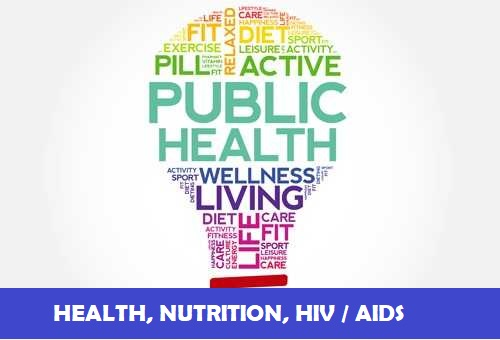
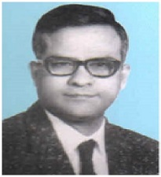
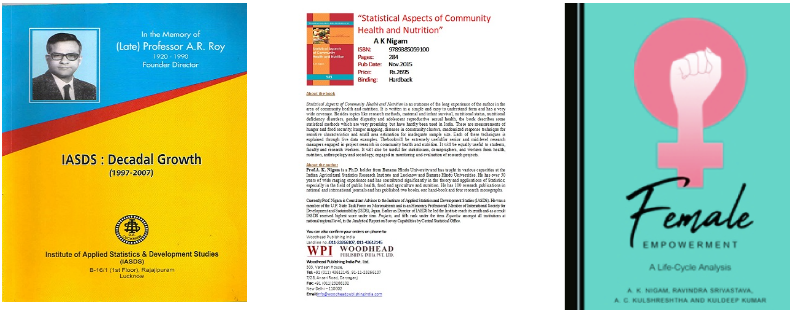
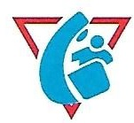

Institute Of Applied And Development Studies


OUR RESEARCH AREAS
 |
 | ||||
|---|---|---|---|---|---|
FOUNDERLate Prof. A.R. Roy Founder Director/ Member Secretary October 1985 to May 01, 1990 |
rofessor Anadi Ranjan Roy (1920-1990) took M.Sc. Degree in Pure Mathematics in 1942 and in Statistics in 1944, both from Calcutta University. After completing his postgraduate, he joined the Indian Council of Agricultural Research and rose to the position of Professor of Statistics there. During his stay at Calcutta, he had the privilege of being taught by Professor P.C. Mahalanobis, Professor R.C. Bose, and Professor P.K. Bose among others. Subsequently, he proceeded to USA for doctoral degree from Stanford University on a Fulbright Grant where he worked with several stalwarts including Professor Charles Stein, Herman Chernoff, and Meyer Girshick. His teachers and research associates/supervisors were highly impressed by his research work and potentials. In 1959, he joined the Department of Statistics, Lucknow University as Professor and Head and continued to hold the position till his retirement in 1980. |
LEGAL STATUS Registered: Under Societies Registration Act. 1860, Registration no. 3458/85-86, valid till 25.10.2025 PAN Card Details: AAATI0945C 12A: IASDS is registered under 12A of Income Tax - Registration No.AAATI0945CE20218 dated 23.09.2021 for Five Assessment year 2022-23 to 2026-27. 80 G Donation Exempted: IASDS is registered under 80G of Income Tax - Registration No.AAATI0945CF20190 dated 23.09.2021 for Five Assessment year 2022-23 to 2026-27. NITI AAYOG registration ID: UP/2012/0052417 DSIR: Recognized by DSIR vide letter no. 13/293/2016-TU-V dated 07/10/2016 |
|---|
OUR PUBLICATION |
MEMORANDUM OFASSOCIATION |
||
|---|---|---|---|
Ongoing Projects |
|---|
|  |
End line Assessment of "To Improve the reproductive health of adolescent girls and
women in
age grou
on: 2023
Source of fund: |
|---|
OUR WORK IN VARIOUS STATES OF INDIA
|
STATESNew Delhi |
|---|
TestimonialsIt was kind of you to send a copy of the Prof. A.R.Roy Memorial Volume- it makes for interesting reading and reiterates that determination finds favour with God and brings endeavours to fruition. Please accept the heartiest felicitation from A2Z on completion of two fruitful decades of IASDS. I am sure that the Institute will continue to serve the public by illuminating statistical research under your able stewardship. SUNEEL K. MUTTOO RESIDENT ADVISOR A2Z PROJECT INDIA There is something very special about you and it becomes almost impossible for anyone not to be influenced by it. I am sorry that I could not be there from the beginning but it was very important for me to listen to the proceedings. Values are fast fading and I was able to see it in you and thats enough for me to have liked every bit of the day. Congratulations!!! I will be away for 10 days but I will give you a call once I am back. VISHWAJEET( JHON-HOPKINS ) I am glad that IASDS will give such a strong emphasis to the role of primary health care – as a route to equity, prosperity, and social stability. These are the larger rewards of better health. C M PANDEY PRESIDENT (ELECT) INTERNATIONAL EPIDEMIOLOGICAL ASSOCIATION, NORTH CAROLINA We had invited Professor A.K. Nigam to the Academy to help us in rendering the statistical advice for finalizing our All India Report on Land Refprms. He is extremely knowledgeable and his presence in the workshop would be very helpful for the future of this project. CHAIRMAN, LAND REFORMS UNIT, LAL BAHADUR ACADEMY OF ADMINISTRATION, MUSSOORIE |
WHY CHOOSE US?
|
|---|
 |
|---|
|
HOME ABOUT US MEMBERS INCUMBENCY |
OUR WORK GALLERY CONTACT US |
LOCATION:1st Floor, 1/220 Virat Khand, Gomtinagar, Lucknow, 226010 |
FIND US ON:CALL US ON:+91-522-2304849 |
|---|